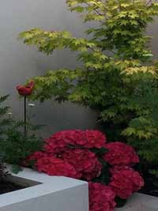

The Design Team consists of Una Thomas and Bernie Torpey. 3design gardens was formed in June 2010 and provides consultations, design work, planting and restoration. Una and Bernie qualified in 2009 in Garden Design at the College of Further Education in Dundrum, Dublin. Bernie’s design in 2008 for ‘Water’s Edge’, the CFE garden at the National Garden Exhibition Centre in Kilquade,
Co Wicklow, is on permanent view. They also designed the college’s ‘5x5 In The City’ garden in Bloom 2009 winning a Bronze medal. Collaborating with glassmaker Róisín de Buitléar in 2010 they designed and built the ‘Beauty and the Bees’ garden in Bloom 2010. The Burt’s Bees sponsored garden won Best in Small Gardens Category, was voted the Designer’s Choice and was awarded a Silver Gilt medal by the judging
panel. ‘Beauty and the Bees’ was installed at NGEC, Kilquade, Co. Wicklow, and is open daily for visitors. Our Bloom 2012 concept garden, 'Angel’s Fishing Rods, Mermaid’s Tears - a Tale of the Sea', on the subject of marine conservation and plastic pollution really caught the public’s imagination. This garden won a Gold Medal and Best in Category.